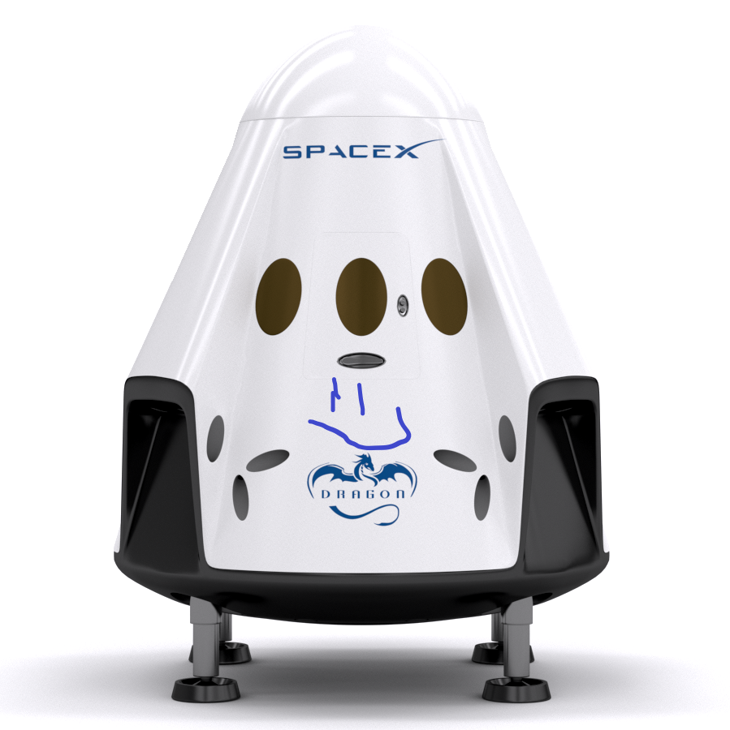

Hyperblog
Tu blog de confianza
Aqui es el titulo atractivo e interes ante del post
Y este es el párrafo de inicio donde vamos a explicar las cosas increíbles que se pueden hacer con las ramas

Suscribete y dale like
Los blogs son la mejor forma de compartir informacion y tus ideas. Mucho mas que ir a conferencias o salir en Youtube. Excepto si eres una rockstar. Pero estadisticamente no lo eres ... por ahora.